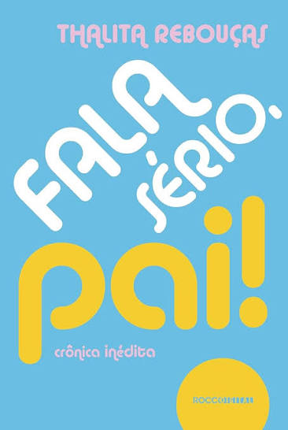
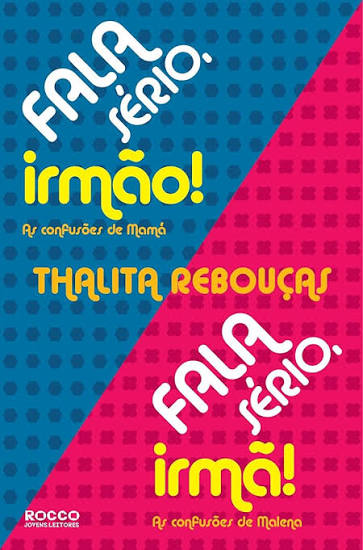
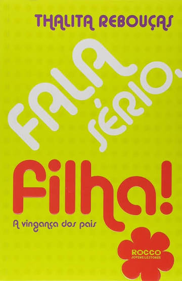

Formada em jornalismo, Thalita decide seguir sua paixão. Ela publica seu primeiro livro, "Traição Entre Amigas", de forma independente, marcando o início de sua carreira literária.
Thalita Rebouças
Atriz, jornalista, escritora, roteirista e apresentadora brasileira.



A Jornada de Thalita
Lançamento de "Tudo por um Popstar". A história de três amigas que fazem loucuras para ver a boyband favorita no Rio de Janeiro capturou perfeitamente a essência da cultura de fãs no Brasil.
Lançamento de "Fala Sério, Mãe!". O livro explode em popularidade ao mostrar a relação mãe e filha com um humor único, inaugurando o estilo inconfundível da autora de conversar diretamente com o adolescente.
O livro "Uma Fada Veio Me Visitar" ganha as telas do cinema com o título "É Fada!". Estrelado por Kéfera Buchmann, o longa abriu as portas para o universo de Thalita no audiovisual.
A obra de Thalita ganha o cinema. O filme "Fala Sério, Mãe!", estrelado por Ingrid Guimarães e Larissa Manoela, leva milhões aos cinemas e consolida a autora no audiovisual.
No mesmo ano em que brilhou nos cinemas, Thalita expandiu sua conexão com o público ao estrear como repórter dos bastidores do programa "The Voice Kids", na Rede Globo.
Lançamento do filme "Pai em Dobro". Escrito originalmente como roteiro para o streaming e estrelado por Maisa Silva, o longa entrou no Top 10 mundial da Netflix e logo depois virou livro.
Com milhões de livros vendidos e traduzida para mais de 20 países, Thalita Rebouças segue como uma das maiores referências da literatura juvenil brasileira.